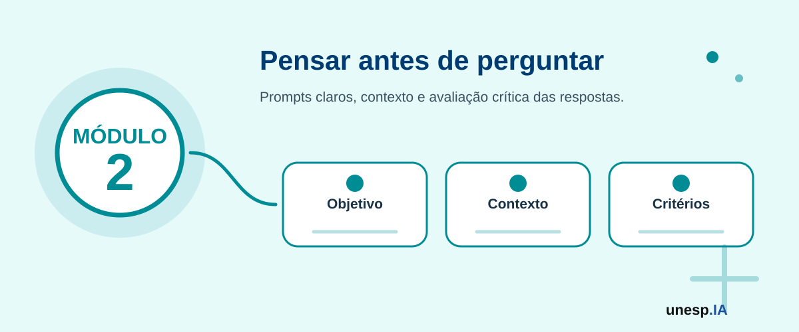

Ferramentas e Aplicações da Inteligência Artificial
Ferramentas relacionadas neste módulo

Apresentação
No Módulo 1, foram apresentados os fundamentos e o letramento inicial em Inteligência Artificial. O participante conheceu o que é IA, onde ela aparece no cotidiano, quais são suas principais áreas, como funciona de forma introdutória e quais cuidados devem ser adotados em relação à segurança, ética, privacidade e LGPD.
O Módulo 2 aprofunda o uso prático de ferramentas de Inteligência Artificial. A proposta é capacitar os participantes para utilizar assistentes de IA e outras ferramentas digitais em situações reais de estudo, trabalho, organização pessoal, pesquisa, leitura de documentos, produtividade e cidadania digital.
Este módulo mantém uma abordagem acessível, prática e progressiva. O objetivo não é apenas apresentar ferramentas, mas desenvolver autonomia para escolher, testar, comparar, avaliar e utilizar a IA de forma útil, crítica, segura e responsável.
1. Organização do Módulo
Carga horária total
12 horas.
Público recomendado
Cidadãos em geral, idosos, jovens, adultos, trabalhadores, estudantes, professores, empreendedores, servidores públicos e participantes que já realizaram o Módulo 1 ou possuem noções iniciais sobre Inteligência Artificial.
Objetivo geral
Capacitar os participantes para utilizar ferramentas de Inteligência Artificial em atividades de estudo, trabalho, organização pessoal, pesquisa, leitura de documentos, produtividade, comunicação e cidadania digital, com atenção à qualidade dos resultados, à verificação das informações, à privacidade e ao uso responsável da tecnologia.
Competências desenvolvidas
Ao final do módulo, espera-se que o participante seja capaz de:
- utilizar assistentes conversacionais como ChatGPT, Gemini e Copilot;
- elaborar prompts (instruções para a IA) adequados para diferentes finalidades;
- utilizar IA para estudo, revisão, resumo e explicação de conteúdos;
- utilizar IA para organização pessoal, planejamento e produtividade;
- utilizar IA para produção e revisão de mensagens, documentos e comunicações;
- utilizar ferramentas de IA para pesquisa e síntese de informações;
- utilizar ferramentas como NotebookLM para leitura e análise de documentos;
- comparar respostas geradas por diferentes ferramentas;
- avaliar a confiabilidade das respostas produzidas por IA;
- reconhecer limites, erros, alucinações e vieses;
- utilizar IA com cuidado em temas sensíveis, jurídicos, administrativos e de saúde;
- produzir um kit pessoal de produtividade, pesquisa e organização com IA.
2. Estrutura das Unidades
| Unidade | Tema | Carga horária |
|---|---|---|
| Unidade 2.1 | Conhecendo o ecossistema de ferramentas de IA | 2h |
| Unidade 2.2 | IA para estudos e aprendizagem | 2h |
| Unidade 2.3 | IA para trabalho, comunicação e produtividade | 2h |
| Unidade 2.4 | IA para organização pessoal e vida cotidiana | 2h |
| Unidade 2.5 | IA para pesquisa, documentos e organização do conhecimento | 2h |
| Unidade 2.6 | IA para cidadania digital, legislação, normas e serviços públicos | 2h |
| Total | 12h |
A sequência pedagógica segue a lógica:
conhecer ferramentas → usar para aprender → usar para trabalhar → organizar a rotina → pesquisar documentos → aplicar em cidadania digital
Unidade 2.1 – Conhecendo o ecossistema de ferramentas de IA
Carga horária
2 horas
Objetivo da unidade
Apresentar diferentes tipos de ferramentas de Inteligência Artificial, suas finalidades, possibilidades de uso, limitações e critérios para escolha segura e adequada.
Situação de abertura
Dona Maria ouviu falar do ChatGPT, mas não sabe a diferença entre ele, Gemini e Copilot. João usa uma IA para estudar, mas não sabe se pode confiar em todas as respostas. Ana quer resumir um documento grande. Carlos quer criar ideias para seu pequeno negócio. Uma professora quer preparar materiais para uma aula. Um servidor público quer localizar informações em documentos oficiais.
Todos querem usar IA, mas cada situação pode exigir uma ferramenta diferente.
Conceito principal
O ecossistema de ferramentas de IA é o conjunto de aplicações digitais que utilizam Inteligência Artificial para apoiar diferentes tarefas, como conversar, responder perguntas, resumir textos, gerar imagens, organizar documentos, criar apresentações, analisar informações, planejar atividades e automatizar processos.
Nem toda ferramenta de IA serve para tudo. Algumas são melhores para conversa e explicação; outras para pesquisa; outras para documentos; outras para imagens; outras para produtividade; outras para análise de dados.
Tipos de ferramentas de IA
Assistentes conversacionais
São ferramentas que permitem conversar com a IA por texto ou voz.
Exemplos:
Usos possíveis:
- tirar dúvidas;
- pedir explicações;
- organizar ideias;
- criar textos;
- revisar mensagens;
- gerar exemplos;
- planejar atividades.
Ferramentas de busca e pesquisa com IA
São ferramentas que ajudam a buscar, resumir e organizar informações.
Exemplos:
- Perplexity;
- Gemini;
- Copilot;
- mecanismos de busca com IA.
Usos possíveis:
- pesquisar temas;
- localizar fontes;
- comparar informações;
- obter sínteses;
- encontrar referências.
Ferramentas para documentos e conhecimento
São ferramentas que permitem trabalhar com textos, PDFs, anotações e materiais de estudo.
Exemplos:
- NotebookLM;
- Google Docs com recursos de IA;
- ferramentas de resumo de documentos.
Usos possíveis:
- fazer perguntas sobre documentos;
- resumir textos longos;
- organizar ideias;
- gerar sínteses;
- criar roteiros de estudo.
Ferramentas de produtividade
São ferramentas que ajudam a organizar tarefas, calendários, documentos, planilhas e fluxos de trabalho.
Exemplos:
- Google Agenda;
- Google Docs;
- Google Sheets;
- Notion AI;
- Microsoft Copilot;
- Trello.
Usos possíveis:
- planejamento semanal;
- listas de tarefas;
- organização de compromissos;
- controle de atividades;
- relatórios simples.
Ferramentas de criação visual
São ferramentas que apoiam a criação de cartazes, apresentações, imagens e materiais gráficos.
Exemplos:
- Canva;
- Canva AI;
- DALL·E;
- Adobe Firefly;
- Leonardo AI.
Usos possíveis:
- criar cartazes;
- produzir slides;
- gerar imagens;
- criar infográficos;
- preparar materiais de divulgação.
Se o objetivo é conversar e pedir explicações, um assistente como ChatGPT, Gemini ou Copilot pode ser suficiente.
Se o objetivo é pesquisar com fontes, uma ferramenta como Perplexity ou buscadores com IA pode ser mais adequada.
Se o objetivo é trabalhar com documentos próprios, o NotebookLM pode ser útil.
Se o objetivo é criar cartazes e apresentações, o Canva pode ser mais indicado.
Critérios para escolher uma ferramenta
Antes de usar uma ferramenta de IA, pergunte:
- Qual é a tarefa que quero realizar?
- A ferramenta é adequada para essa tarefa?
- A ferramenta exige login?
- A ferramenta armazena meus dados?
- Estou inserindo informações pessoais ou sensíveis?
- A resposta precisa ser verificada?
- A ferramenta mostra fontes?
- O resultado será usado apenas como apoio ou para uma decisão importante?
Ferramentas de IA podem errar, inventar informações, omitir detalhes, apresentar respostas desatualizadas ou produzir respostas convincentes, mas incorretas. Por isso, o uso da IA deve sempre envolver revisão humana.
Escolha uma necessidade pessoal ou profissional e indique qual ferramenta seria mais adequada:
- Escrever uma mensagem formal.
- Resumir um documento.
- Pesquisar um tema.
- Criar uma apresentação.
- Organizar compromissos.
- Criar ideias para divulgação.
Atividade guiada – Escolhendo a ferramenta adequada
Objetivo
Relacionar necessidades reais com ferramentas de IA adequadas.
Passo a passo
- O instrutor apresenta diferentes situações de uso.
- Os participantes indicam quais ferramentas poderiam ser utilizadas.
- Para cada situação, o grupo responde:
- qual ferramenta usar?
- por que essa ferramenta?
- qual cuidado é necessário?
- o resultado precisa ser verificado?
- As respostas são registradas em uma tabela coletiva.
- A turma discute que uma mesma tarefa pode ser feita por ferramentas diferentes.
Produto da unidade
Tabela coletiva: Situação → Ferramenta → Cuidado → Resultado esperado.
Saber usar IA significa apenas conhecer uma ferramenta ou saber escolher a ferramenta certa para cada situação?
Unidade 2.2 – IA para estudos e aprendizagem
Carga horária
2 horas
Objetivo da unidade
Capacitar os participantes para utilizar ferramentas de IA como apoio ao estudo, à compreensão de conteúdos, à revisão, à organização de planos de estudo e à aprendizagem autônoma.
Situação de abertura
João está com dificuldade para entender um conteúdo de ciências. Ele pesquisa na internet, mas encontra textos longos e difíceis. Ao usar uma ferramenta de IA, pede uma explicação simples, exemplos e perguntas de revisão. A resposta ajuda, mas João percebe que precisa conferir se as informações estão corretas.
A IA pode apoiar o estudo, mas não substitui a aprendizagem ativa.
Conceitos principais
A IA pode auxiliar o estudo ao explicar conteúdos em linguagem acessível, criar exemplos, gerar resumos, propor exercícios, organizar planos de estudo e adaptar explicações para diferentes níveis de conhecimento.
No entanto, estudar com IA não significa apenas copiar respostas. O participante deve usar a IA como apoio para compreender melhor, revisar, praticar e aprofundar conteúdos.
Aplicações da IA nos estudos
A IA pode ser usada para:
- explicar conteúdos difíceis;
- simplificar textos;
- criar resumos;
- gerar perguntas de revisão;
- elaborar mapas mentais;
- organizar planos de estudo;
- criar exemplos práticos;
- comparar conceitos;
- traduzir textos;
- revisar redações;
- simular perguntas de prova;
- criar listas de exercícios.
Exemplos de prompts para estudo
Explicação simples
Explique o conceito de fotossíntese para uma pessoa iniciante, usando linguagem simples e exemplos do cotidiano.
Resumo
Resuma este texto em cinco tópicos principais e destaque as ideias mais importantes.
Revisão
Crie cinco perguntas de revisão sobre o tema energia elétrica, com respostas comentadas.
Comparação
Compare energia solar e energia eólica em uma tabela com vantagens e desvantagens.
Plano de estudo
Monte um plano de estudo de uma semana para revisar matemática básica, com atividades diárias de 30 minutos.
Explicação por níveis
Explique o tema aquecimento global em três níveis: criança, jovem e adulto.
Um participante pode copiar um pequeno texto sobre um tema e pedir:
“Explique este texto com linguagem mais simples, destacando as ideias principais e criando três perguntas para verificar se entendi.”
Depois, deve comparar a explicação com o texto original e verificar se a IA não alterou o sentido.
A IA pode ajudar a estudar, mas também pode gerar respostas incorretas. Em conteúdos escolares, acadêmicos, técnicos, jurídicos ou de saúde, é necessário consultar fontes confiáveis, materiais do curso, professores ou especialistas.
Escolha um conteúdo que você considera difícil e peça à IA:
- uma explicação simples;
- três exemplos;
- cinco perguntas de revisão;
- um resumo em tópicos.
Depois responda: a explicação ficou clara? Há algo que precisa ser verificado?
Atividade guiada – Meu plano de estudo com IA
Objetivo
Criar um plano simples de estudo com apoio de IA.
Passo a passo
- Cada participante escolhe um tema que deseja aprender ou revisar.
- Elabora um prompt (instrução para a IA) pedindo um plano de estudo.
- Solicita que a IA organize o plano por dias ou etapas.
- Pede exemplos e exercícios.
- Revisa se o plano está realista.
- Ajusta a linguagem e o tempo disponível.
- Registra a versão final em documento, papel ou apresentação.
Modelo de prompt
Quero estudar [tema]. Tenho [tempo disponível] por dia durante [quantidade de dias]. Monte um plano de estudo simples, com explicações, atividades práticas e perguntas de revisão.
Produto da unidade
Plano de estudo personalizado com apoio de IA.
A IA pode explicar, resumir e sugerir exercícios. Mas o que ainda depende do esforço, da atenção e da participação ativa do estudante?
Unidade 2.3 – IA para trabalho, comunicação e produtividade
Carga horária
2 horas
Objetivo da unidade
Capacitar os participantes para utilizar ferramentas de IA em tarefas profissionais e de comunicação, como escrita de mensagens, e-mails, relatórios, atas, planejamento, organização de tarefas e melhoria da produtividade.
Situação de abertura
Carlos precisa responder um cliente de forma educada. Ana precisa organizar uma reunião. Dona Helena quer escrever uma mensagem mais clara para solicitar atendimento. Um servidor público precisa elaborar um comunicado simples. Um professor precisa preparar um roteiro de reunião.
Em todos esses casos, a IA pode ajudar a criar uma primeira versão, revisar o texto e organizar as ideias.
Conceitos principais
A IA pode apoiar a comunicação e a produtividade ao auxiliar na escrita, revisão, organização e planejamento. Ela pode ajudar a transformar ideias soltas em textos mais claros, objetivos e adequados ao público.
No entanto, o conteúdo final deve ser revisado por uma pessoa. A IA pode sugerir, mas quem assume a responsabilidade pelo envio, publicação ou decisão é o usuário.
Aplicações da IA no trabalho e na comunicação
A IA pode ajudar a:
- escrever e-mails;
- revisar mensagens;
- melhorar clareza e tom;
- criar comunicados;
- elaborar atas;
- resumir reuniões;
- organizar tarefas;
- criar listas de prioridades;
- montar cronogramas;
- estruturar relatórios simples;
- preparar apresentações;
- adaptar linguagem para diferentes públicos.
Exemplos de prompts para comunicação
E-mail profissional
Escreva um e-mail profissional para confirmar minha participação em uma reunião amanhã às 9h, com tom educado, objetivo e cordial.
Mensagem curta
Reescreva esta mensagem de forma mais clara, educada e objetiva: [colar mensagem].
Comunicado
Crie um comunicado simples para informar os participantes sobre a alteração do horário de uma oficina.
Ata de reunião
Organize as seguintes anotações em formato de ata simples, com pauta, decisões e próximos passos: [colar anotações].
Relatório simples
Transforme estas informações em um relatório curto, com introdução, principais pontos e encaminhamentos: [colar informações].
Adaptação de linguagem
Reescreva este texto usando linguagem mais simples, adequada para cidadãos em geral.
Uma pequena empresa pode usar IA para responder clientes com mais rapidez.
Um professor pode usar IA para organizar instruções de uma atividade.
Um servidor público pode usar IA para transformar uma linguagem técnica em linguagem mais acessível ao cidadão.
Um trabalhador pode usar IA para organizar tarefas semanais.
Não insira informações sigilosas, dados pessoais, dados bancários, documentos internos ou informações sensíveis em ferramentas de IA sem autorização e sem segurança adequada.
Pegue uma mensagem simples e peça à IA três versões:
- mais formal;
- mais simples;
- mais curta.
Depois compare: qual versão ficou melhor para o público desejado?
Atividade guiada – Comunicação com IA
Objetivo
Criar uma comunicação profissional ou cidadã com apoio da IA.
Passo a passo
- Escolher uma situação de comunicação:
- e-mail;
- mensagem;
- comunicado;
- convite;
- solicitação;
- relatório curto.
- Escrever um prompt informando contexto, público, objetivo e formato.
- Gerar uma primeira versão com IA.
- Pedir ajustes de linguagem.
- Revisar o conteúdo.
- Verificar se há informações sensíveis.
- Produzir a versão final.
Produto da unidade
Mensagem, e-mail, comunicado ou relatório curto produzido com apoio de IA.
A IA pode escrever por nós, mas quem deve decidir se o texto está correto, adequado e respeitoso?
Unidade 2.4 – IA para organização pessoal e vida cotidiana
Carga horária
2 horas
Objetivo da unidade
Capacitar os participantes para utilizar IA na organização de tarefas pessoais, compromissos, listas, planejamento semanal, viagens, rotina doméstica, hábitos e atividades do cotidiano.
Situação de abertura
Dona Maria quer organizar seus compromissos médicos. João precisa dividir melhor o tempo entre estudo e trabalho. Ana quer planejar uma viagem. Carlos precisa organizar tarefas da semana. Uma família quer montar uma lista de compras econômica.
A IA pode ajudar a organizar essas atividades, desde que o usuário revise as sugestões e adapte à sua realidade.
Conceitos principais
A IA pode funcionar como uma assistente de organização pessoal. Ela pode ajudar a planejar, listar, ordenar prioridades, lembrar etapas, organizar ideias e criar rotinas.
No entanto, a IA não conhece toda a realidade do usuário. Por isso, as sugestões devem ser ajustadas conforme preferências, limitações, tempo, recursos, saúde, renda e contexto familiar.
Aplicações da IA na vida cotidiana
A IA pode ajudar em:
- planejamento semanal;
- organização de compromissos;
- lista de compras;
- planejamento de refeições;
- organização doméstica;
- roteiro de viagem;
- planejamento financeiro básico;
- lembretes de atividades;
- organização de estudos;
- rotina de autocuidado;
- preparação de eventos familiares;
- comparação de alternativas.
Exemplos de prompts para organização pessoal
Planejamento semanal
Monte uma agenda semanal simples considerando trabalho pela manhã, estudos à tarde e atividades domésticas à noite.
Lista de compras
Crie uma lista de compras econômica para preparar refeições simples durante três dias.
Viagem
Monte um roteiro de viagem de dois dias para uma família, considerando baixo custo e atividades culturais.
Rotina doméstica
Organize uma rotina semanal de tarefas domésticas para uma casa com três pessoas.
Compromissos de saúde
Crie um modelo de agenda para acompanhar consultas, exames e horários de medicamentos, sem incluir dados médicos sensíveis.
Planejamento de tempo
Ajude-me a organizar três prioridades para esta semana, considerando que tenho pouco tempo disponível.
Um idoso pode usar IA para organizar uma lista de perguntas para levar ao médico, sem inserir dados sensíveis.
Um estudante pode criar um plano de estudos.
Um trabalhador pode organizar tarefas por prioridade.
Uma família pode criar uma lista de compras mais planejada.
Evite inserir informações pessoais sensíveis, como diagnósticos, números de documentos, dados bancários, endereço completo ou informações íntimas. A IA pode ajudar na organização, mas não deve armazenar dados sensíveis sem necessidade.
Peça à IA:
- uma lista de tarefas para esta semana;
- uma versão organizada por prioridade;
- uma versão com horários sugeridos;
- uma versão mais simples.
Compare qual delas parece mais adequada à sua realidade.
Atividade guiada – Meu plano de organização com IA
Objetivo
Criar um plano de organização pessoal com apoio de IA.
Passo a passo
- Escolher uma área da vida que deseja organizar:
- estudos;
- trabalho;
- casa;
- compromissos;
- viagem;
- compras;
- rotina semanal.
- Criar um prompt com contexto e objetivo.
- Pedir uma resposta organizada em tabela.
- Revisar se a proposta é realista.
- Adaptar horários, prioridades e recursos.
- Registrar o plano final.
Produto da unidade
Plano pessoal de organização com apoio de IA.
A IA pode sugerir uma rotina, mas quem conhece melhor suas prioridades, limites e realidade?
Unidade 2.5 – IA para pesquisa, documentos e organização do conhecimento
Carga horária
2 horas
Objetivo da unidade
Capacitar os participantes para utilizar IA na pesquisa de informações, leitura de documentos, síntese de textos, análise de PDFs, organização de fontes e construção de conhecimento com verificação crítica.
Situação de abertura
Ana recebeu um documento longo e não sabe por onde começar. João precisa pesquisar um tema para uma apresentação. Uma professora quer organizar materiais de aula. Um servidor público precisa entender um documento oficial. Um pesquisador quer comparar textos.
Ferramentas de IA podem ajudar a resumir, organizar, explicar e formular perguntas sobre documentos. Mas é preciso verificar fontes e evitar confiar cegamente em respostas automáticas.
Conceitos principais
A IA pode apoiar a pesquisa e a organização do conhecimento, mas não substitui leitura crítica, verificação de fontes e interpretação humana.
Ferramentas como NotebookLM permitem trabalhar com documentos fornecidos pelo usuário, gerando resumos, perguntas e explicações com base no material carregado. Outras ferramentas, como Perplexity e buscadores com IA, ajudam a localizar informações e fontes na web.
Aplicações da IA em pesquisa e documentos
A IA pode ajudar a:
- resumir textos longos;
- explicar documentos difíceis;
- extrair pontos principais;
- criar perguntas sobre um documento;
- comparar informações;
- organizar tópicos;
- gerar mapas conceituais;
- preparar apresentações;
- criar sínteses;
- identificar dúvidas;
- localizar fontes;
- verificar informações.
Ferramentas recomendadas
NotebookLM
Útil para:
- analisar documentos;
- fazer perguntas sobre PDFs;
- gerar resumos;
- organizar ideias;
- criar roteiro de estudo;
- sintetizar conteúdos.
Perplexity
Útil para:
- pesquisar temas;
- encontrar fontes;
- comparar informações;
- obter respostas com referências.
ChatGPT, Gemini e Copilot
Úteis para:
- explicar textos;
- organizar ideias;
- gerar perguntas;
- criar resumos;
- adaptar linguagem;
- montar roteiros.
Exemplos de prompts para documentos
Resumo
Resuma este documento em cinco pontos principais, usando linguagem simples.
Perguntas
Crie dez perguntas que me ajudem a entender melhor este texto.
Explicação
Explique este trecho como se fosse para uma pessoa iniciante no assunto.
Síntese
Organize as ideias principais deste documento em uma tabela com tema, explicação e exemplo.
Apresentação
Transforme este conteúdo em um roteiro de apresentação de cinco minutos.
Verificação
Liste quais informações deste texto precisam ser verificadas em fontes oficiais.
Um cidadão pode usar IA para entender melhor um comunicado público.
Um estudante pode usar IA para organizar uma apresentação.
Um professor pode usar IA para transformar um texto em atividade didática.
Um pesquisador pode usar IA para organizar uma síntese inicial de literatura.
Um servidor público pode usar IA para estruturar um resumo de documentos internos, respeitando regras de sigilo.
Não carregue documentos com dados pessoais, informações sigilosas, dados de saúde, documentos internos restritos ou dados de terceiros sem autorização.
Em temas importantes, sempre verifique a informação em fontes oficiais ou confiáveis.
Escolha um pequeno texto e peça à IA:
- resumo em tópicos;
- explicação em linguagem simples;
- três perguntas sobre o conteúdo;
- uma tabela com ideias principais;
- pontos que precisam ser verificados.
Atividade guiada – Síntese orientada de documento
Objetivo
Criar uma síntese organizada de um documento ou tema com apoio de IA.
Passo a passo
- Escolher um texto curto, documento público ou material fornecido pelo instrutor.
- Inserir o texto na ferramenta escolhida ou utilizar NotebookLM, se disponível.
- Solicitar um resumo em tópicos.
- Solicitar uma explicação em linguagem simples.
- Pedir perguntas de revisão.
- Organizar as informações em tabela.
- Verificar se há informações duvidosas.
- Registrar a síntese final.
Produto da unidade
Síntese orientada de documento ou tema de interesse.
A IA pode resumir um documento, mas quem deve avaliar se o resumo está fiel, completo e adequado ao contexto?
Unidade 2.6 – IA para cidadania digital, legislação, normas e serviços públicos
Carga horária
2 horas
Objetivo da unidade
Capacitar os participantes para utilizar IA e ferramentas digitais no acesso a informações públicas, consulta inicial a normas, organização de documentos, compreensão de serviços digitais e exercício da cidadania digital com segurança e responsabilidade.
Situação de abertura
Dona Helena quer entender uma informação sobre aposentadoria. Carlos precisa localizar uma lei municipal. Ana quer compreender um edital. João recebeu uma mensagem sobre um benefício social e quer verificar se é verdadeira. Um servidor público precisa transformar uma linguagem técnica em uma explicação simples para cidadãos.
A IA pode ajudar na leitura inicial, na organização de informações e na elaboração de perguntas. Mas ela não substitui fontes oficiais, profissionais especializados ou órgãos competentes.
Conceitos principais
Cidadania digital envolve o uso consciente, seguro e responsável das tecnologias digitais para acessar informações, serviços, direitos, deveres e canais de participação social.
No contexto da IA, isso significa utilizar ferramentas inteligentes para compreender documentos, localizar informações e organizar dúvidas, sempre verificando em fontes oficiais e protegendo dados pessoais.
Aplicações da IA em cidadania digital
A IA pode ajudar a:
- resumir documentos públicos;
- explicar termos difíceis;
- organizar perguntas para atendimento;
- localizar informações em sites oficiais;
- comparar versões de textos;
- entender editais, comunicados e normas;
- criar listas de documentos necessários;
- transformar linguagem técnica em linguagem simples;
- preparar mensagens formais para órgãos públicos;
- verificar sinais de golpe ou desinformação.
Ferramentas e fontes úteis
- ChatGPT;
- Gemini;
- Copilot;
- Perplexity;
- NotebookLM;
- LexML Brasil;
- Portal da Legislação Federal;
- sites oficiais de prefeituras;
- sites de ministérios;
- diários oficiais;
- portais de transparência;
- ferramentas de checagem de fatos.
Exemplos de prompts para cidadania digital
Entendimento de norma
Explique este trecho de uma norma em linguagem simples, destacando o que parece ser direito, dever, prazo e documento necessário.
Atendimento público
Crie uma lista de perguntas que devo fazer em um atendimento público sobre [tema].
Comunicação formal
Escreva uma mensagem formal e educada solicitando informações sobre [serviço público].
Verificação de golpe
Analise esta mensagem e indique sinais de possível golpe, sem clicar em links.
Documentos necessários
Organize uma lista de documentos que podem ser necessários para solicitar [serviço], indicando que devo confirmar em fonte oficial.
Linguagem simples
Reescreva este comunicado técnico em linguagem simples para cidadãos em geral.
Um cidadão pode usar IA para organizar dúvidas antes de ir a um órgão público.
Uma prefeitura pode usar IA para transformar comunicados técnicos em textos mais compreensíveis.
Um servidor pode usar IA para estruturar uma resposta inicial, desde que revise e valide a informação.
Um participante pode usar IA para identificar sinais de golpe em mensagens recebidas.
A IA não substitui advogado, contador, médico, servidor responsável, órgão oficial ou profissional especializado.
Em temas jurídicos, previdenciários, tributários, médicos ou administrativos, a IA pode ajudar a organizar informações, mas a confirmação deve ser feita em fonte oficial ou com profissional qualificado.
Escolha uma situação de cidadania digital e peça à IA:
- explicação em linguagem simples;
- lista de dúvidas para atendimento;
- documentos que podem ser necessários;
- cuidados importantes;
- fontes oficiais para verificar.
Atividade guiada – Meu guia de cidadania digital com IA
Objetivo
Criar um guia simples de uso da IA para acessar informações e serviços públicos com segurança.
Passo a passo
- Escolher um tema:
- saúde;
- educação;
- transporte;
- assistência social;
- direitos do consumidor;
- legislação;
- serviços municipais;
- aposentadoria;
- documentos pessoais.
- Criar um prompt para pedir explicação simples.
- Pedir uma lista de documentos ou informações necessárias.
- Pedir uma lista de dúvidas para atendimento.
- Identificar fontes oficiais para verificação.
- Registrar cuidados de segurança.
- Organizar tudo em um guia curto.
Produto da unidade
Guia simples de cidadania digital com apoio de IA.
A IA pode ajudar o cidadão a entender melhor seus direitos e serviços, mas como garantir que a informação seja correta, atualizada e segura?
Avaliação do Módulo 2
A avaliação será formativa, prática e participativa.
Critérios
- participação nas discussões;
- uso adequado das ferramentas de IA;
- elaboração de prompts contextualizados;
- capacidade de revisar e melhorar respostas da IA;
- reconhecimento de limites, erros e alucinações;
- cuidado com dados pessoais e informações sensíveis;
- produção dos produtos das unidades;
- clareza na apresentação das atividades;
- capacidade de verificar informações em fontes confiáveis;
- uso ético, seguro e responsável das ferramentas.
Produto final do módulo
Ao final do Módulo 2, o participante terá produzido:
Kit pessoal de produtividade, pesquisa e organização com IA.
Esse kit poderá conter:
- plano de estudo com IA;
- mensagem, e-mail ou comunicado produzido com IA;
- plano pessoal de organização;
- síntese de documento ou tema;
- guia de cidadania digital com IA;
- cartão pessoal de prompts úteis.
Resultado esperado
Ao final do Módulo 2, o participante deverá ser capaz de utilizar ferramentas de IA de forma prática, segura e crítica em situações de estudo, trabalho, organização pessoal, pesquisa, leitura de documentos, comunicação e cidadania digital.
O participante também deverá compreender que a IA deve ser utilizada como apoio, e não como substituta da análise humana, da verificação de informações, da responsabilidade profissional ou da consulta a fontes oficiais.